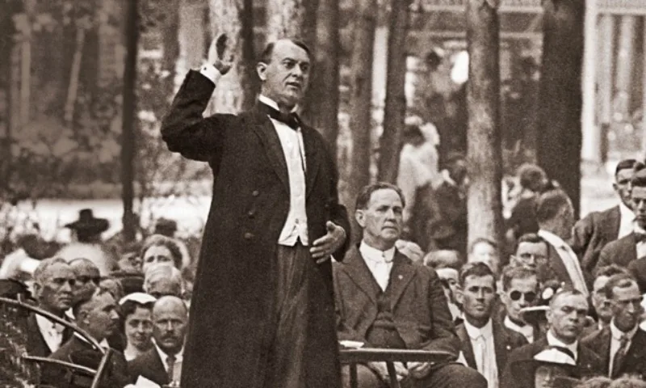
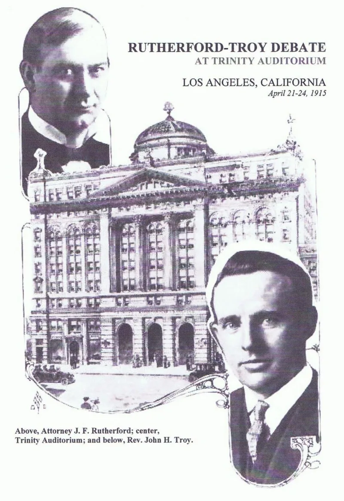

No good counter-argument has been published by the Watchtower.
The Watchtower of Apr 1, 1972 (p. 197) said Jehovah had a prophet to warn people.
That prophet was not one man. It was "a body of men and women...
known today as Jehovah's Christian witnesses." The Watchtower of Jun 15, 1957 (p. 370) told members to respond to the slave's directions "as we would to the voice of God." Members must obey instructions "whether these appear sound from a strategic or human standpoint or not" (The Watchtower, Nov 15, 2013, p.
20).
When predictions fail, the claim reverses. "The Governing Body is neither inspired nor infallible" (The Watchtower, Feb 2017 study edition, p.
26). The Watchtower of May 1, 1972 said Jehovah's Witnesses do not claim any divine inspiration.
Awake! of Mar 22, 1993 (pp.
3-4 and its footnote) said they never spoke in the name of Jehovah.
A channel need not be inspired. Israel's priests taught God's law with authority and received no new revelation.
The Society says it administers and teaches a Bible that is already complete. "Prophet" in the 1972 article sits inside quotation marks: a warning role, not foretelling.
Deuteronomy 18 condemns speaking presumptuously in Jehovah's name, and they have declined to attach his name to their expectations. Peter erred at Antioch and was still an apostle.
No apostle ever demanded obedience to instructions "whether sound or not" while disclaiming responsibility for them. Peter's error was corrected in public by another fallible man.
Watchtower rules forbid that, on pain of disfellowshipping. And the prophet-in-quotes defense meets the same corpus: they applied Ezekiel's watchman commission to themselves for decades, and dated Armageddon in print.
Strong for you. The structure is heads-I-win.
Authority is at its highest when obedience is being asked for. It is at its lowest when a prediction fails.
You cannot bill yourself as the sole channel of a God who cannot lie, and also claim a waiver on everything the channel carried.
"If the Governing Body is not inspired, why must I obey instructions even when they do not seem sound?"


A channel need not be inspired; Israel's priests taught God's law without new revelation.
The Witnesses see no clash here, because a channel need not be inspired. Israel's priests taught God's law with authority and got no new revelation. The Watchtower likewise claims to be the appointed teacher of a Bible that is already complete. It does not claim new inspired messages.
The word 'prophet' in the 1972 article, defenders note, sits in quotation marks. It is a warning role. It is forth-telling Scripture, not foretelling by revelation. Deuteronomy 18 condemns those who prophesy on their own in Jehovah's name. The Society has often declined to attach Jehovah's name to its hopes. It prints its errors and its fixes under its own name. Stewards can fail and still be truly appointed. Peter erred at Antioch and remained an apostle.
Strong for you. Authority is highest when they ask, lowest when they miss.
The Peter analogy fails at the key point. No apostle demanded obedience to instructions 'whether sound or not' while disowning blame for their content. And Peter's error was corrected in public by another fallible man. Watchtower rules forbid that, on pain of disfellowshipping.
The prophet-in-quotes defense meets the same corpus. The organization applied Ezekiel's watchman commission to itself for decades. It dated Armageddon in print.
The structure is heads-I-win. The claim is at its highest when obedience is asked for, 'as to the voice of God.' It is at its lowest when a prediction fails, 'never inspired.' You cannot bill yourself as the sole channel of the God who cannot lie, and also claim a waiver on everything the channel carried.